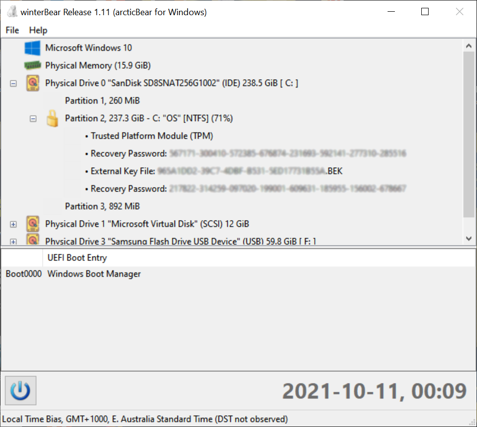
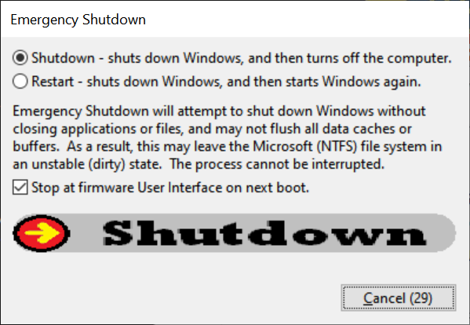

As with the example below, the recovery key for all unlocked BitLocker Disc Encrypted volumes are displayed (where
available). In such a case, the unencrypted contents of BitLocker volumes are exposed to the client.

Microsoft Windows 7 does not natively support the Prolific PL27a1 chip-set. An appropriate driver can be installed
via PL27a1-Win7.zip.
The Windows screen-saver is disabled to prevent unintended terminal locking or logout.
The host computer's memory (RAM) is also exposed as a pseudo file to the client, allowing the full RAM to be copied
as a file (using Rekall's WinPmem software driver).
The User Interface displays two primary pieces of information, a list of attached mass storage devices, and the UEFI
boot entries. At the bottom of the display is the current local time (as reported by Windows) in ISO 8601 format
(YYYY-MM-DD, HH:MM) and time zone information.

winterBear can be used to shutdown the host computer using the power button in the bottom of the display.
The slider arrow must be dragged to the far right before the shutdown commences.
winterBear requires Administrator privileges.